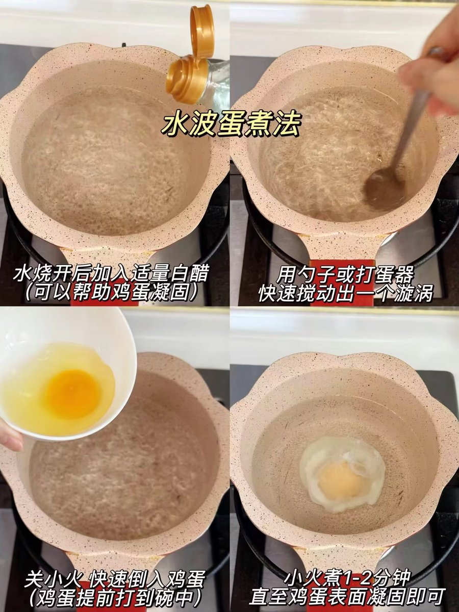
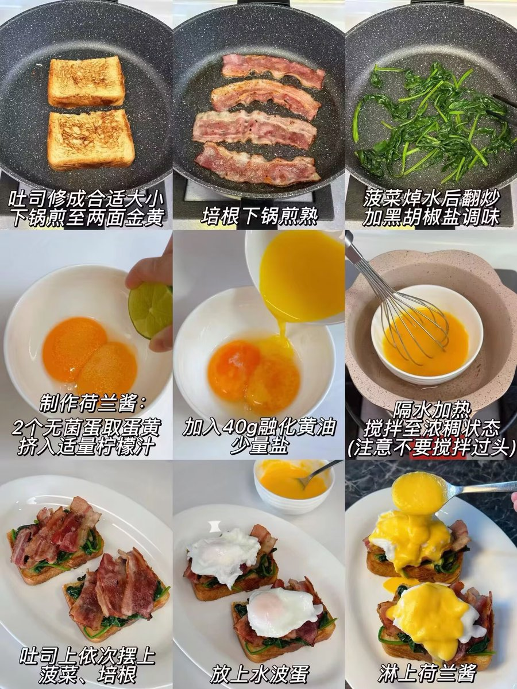

是早露泡泡兔呀
@Poca2381
班尼迪克蛋
【食材】
吐司｜培根｜菠菜｜鸡蛋（无菌蛋）｜黄油｜柠檬汁
【做法】
做水波蛋：水烧开加白醋，用勺子快速搅出漩涡，倒入鸡蛋（鸡蛋提前打入碗中），小火煮1 - 2分钟至表面凝固，捞出备用；
吐司修成合适大小，煎至两面金黄；培根下锅煎熟；菠菜焯水后翻炒，加黑胡椒和盐调味；
制作荷兰酱：2个无菌蛋取蛋黄，挤入柠檬汁，加40g融化黄油、少量盐，隔水加热不停搅拌至浓稠；
吐司依次摆上菠菜、培根、水波蛋，淋上荷兰酱，撒点欧芹碎就完成啦～

